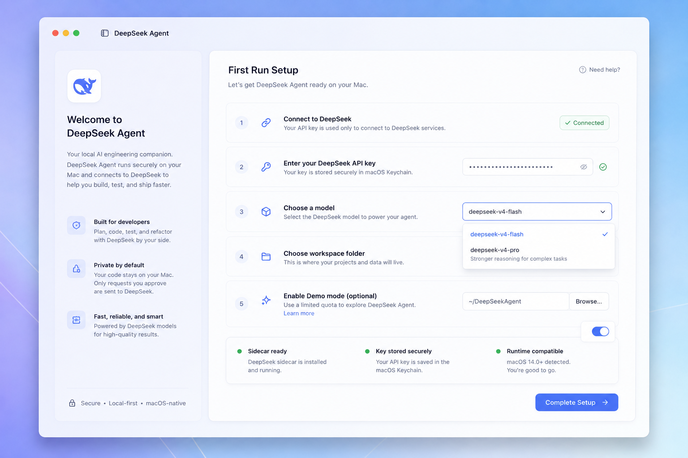
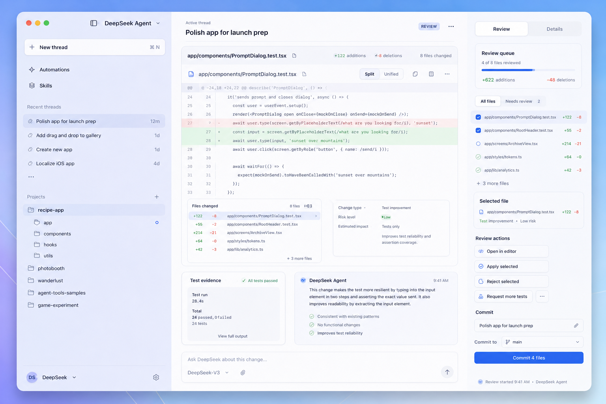
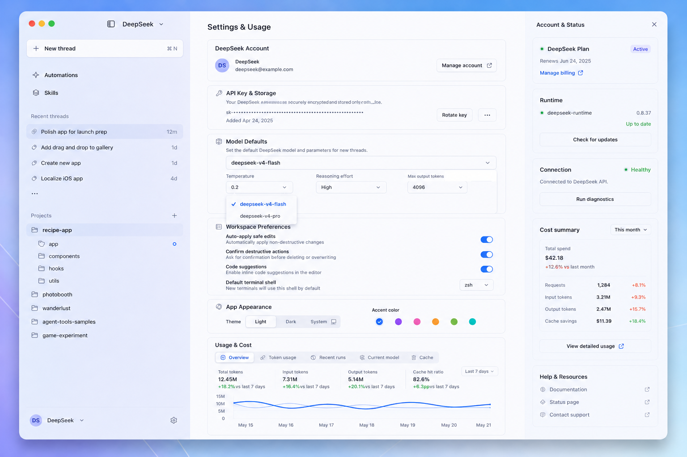

DeepSeek Agent macOS App — UI/UX 与产品交互设计总包 v2
这版把最新的 Codex App 风格视觉方案融合进完整产品设计：轻盈蓝紫渐变、半透明侧栏、白色卡片、克制蓝色强调色、右侧 Review Inspector，以及围绕 DeepSeek-TUI runtime 的本地 agent 工作流。
Runtime: DeepSeek-TUI sidecar
Models: deepseek-v4-flash / deepseek-v4-pro
UI: macOS + WebView/React
Mode: Demo + Real Runtime
一句话方案
主界面不再是 API 连接表单，而是一个 macOS Agent Command Center：左侧管理项目和线程，中间监督 DeepSeek Agent 工作，右侧 review 变更、审批动作、查看 runtime 与成本。
最新效果图





页面设计
First Run Setup
配置 DeepSeek API key、模型、workspace、Demo Mode，并明确 Keychain 和 runtime 状态。
Project Command Center
项目首页显示 active tasks、suggested prompts、recent runs、repo activity 和 runtime quick actions。
Active Thread
把聊天变成结构化工作流：agent summary、files changed、terminal/test cards、composer 和 review inspector。
Review Changes
像 PR review 一样查看 diff、测试证据、文件风险，支持 apply/reject/request tests。
Settings & Usage
DeepSeek-only 设置：API key、模型默认值、workspace 偏好、usage/cost/cache。
视觉系统
| 元素 | 规则 |
|---|---|
| 背景 | 蓝紫柔和渐变，不使用深黑大背景。 |
| 侧栏 | 浅色半透明，blur，选中态为低饱和蓝色。 |
| 卡片 | 白色/玻璃面、细边框、轻阴影、圆角。 |
| 主色 | 克制蓝色，避免黄色主按钮。 |
| 状态 | 成功绿、风险橙、失败红、review 紫；只用于语义。 |
核心流程
Open App → First Run Setup → Project Command Center New Thread → Active Thread streaming → Approval if needed Turn completed → Review Changes → Apply / Reject / Request more tests Settings → DeepSeek account / model / runtime / cost
给 Codex 的实现入口
把本包复制进项目后，在 Codex 中执行：
/goal Implement codex/CODEX_UI_GOAL_V2.md. Keep iterating until the macOS app launches, demo mode works without an API key, the main screens match the v2 visual system, and all acceptance checks in docs/08_ACCEPTANCE_CHECKLIST.md pass.
Codex 应优先实现 FakeRuntimeAdapter 和 Demo Mode，先把 UI 跑通，再接真实 DeepSeek-TUI sidecar。
文档文件
PRODUCT_UI_UX_SPEC_V2.md
docs/01_INFORMATION_ARCHITECTURE.md
docs/02_INTERACTION_FLOWS.md
docs/03_VISUAL_SYSTEM.md
docs/04_COMPONENT_LIBRARY.md
docs/05_MENUS_AND_SHORTCUTS.md
docs/06_RUNTIME_ADAPTER_UI_MAPPING.md
docs/07_CODEX_IMPLEMENTATION_PLAN.md
docs/08_ACCEPTANCE_CHECKLIST.md
codex/CODEX_UI_GOAL_V2.md